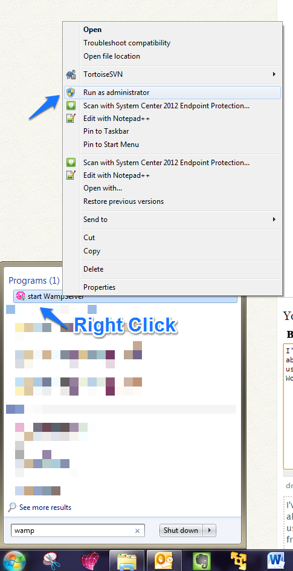

What is a database?
A database is usually a collection of information and data that is organised so that it can be easily accessed, retrieved, managed and updated. Data in a database is usually organised into rows, columns and tables. A database-management system is a means with which end-users interact with the database. It is a software application that aids to capture and analyse data. The database management system used here is MySQL.
What is phpMyadmin and how is it useful?
phpMyAdmin is a free software tool written in PHP, intended to handle the administration of MySQL over the Web. phpMyAdmin supports a wide range of operations on MySQL and MariaDB. Frequently used operations (managing databases, tables, columns, relations, indexes, users, permissions, etc) can be performed via the user interface, while you still have the ability to directly execute any SQL statement.Before we continue with this tutorial:
- Make sure you have wamp server or xampp installed and properly installed and configured
- Download phpmyadminhere. In the site you see a green button at the top right corner (the version number is also inscribed on the button). It downloads as a zip folder.

- After download, to properly install it visit this site
Getting started.
Now after installation, we can find phpmyAdmin in wampserver. To do this Run WAMP server as administrator by Right-clicking on the WAMP icon found in the desktop or in the start menu, (or search for WAMP on your system using the windows search bar), then select “Run as administrator. Click "Yes" on the "User Account Control" popup. After WAMP server has started running, you will notice the WAMP icon below in the notification panel at the bottom-right side of the desktop.

If the icon is green, it means it means all services are running. If the icon is not green, left-click on it, as the admin panel comes up, click start all services

Next, visit localhost on the browser (Enter http://localhost/phpmyadmin/ index.php on the browser). You’ll see this

Now, the username is usually “root” and the password is usually blank.
If you want to change the username and password visit here
Creating New database
After logging in, we enter the index page. There we see Databases. Click on it.
After we have done so, we see the below

Now in the “create database” field, enter any suitable name for your new database.
For this example the name is “new_dbase”. Click on the create button. Leave the “collation” drop-down field as it is.
After creation, we see this

Now we have created our database. To store data in it we need to create tables .